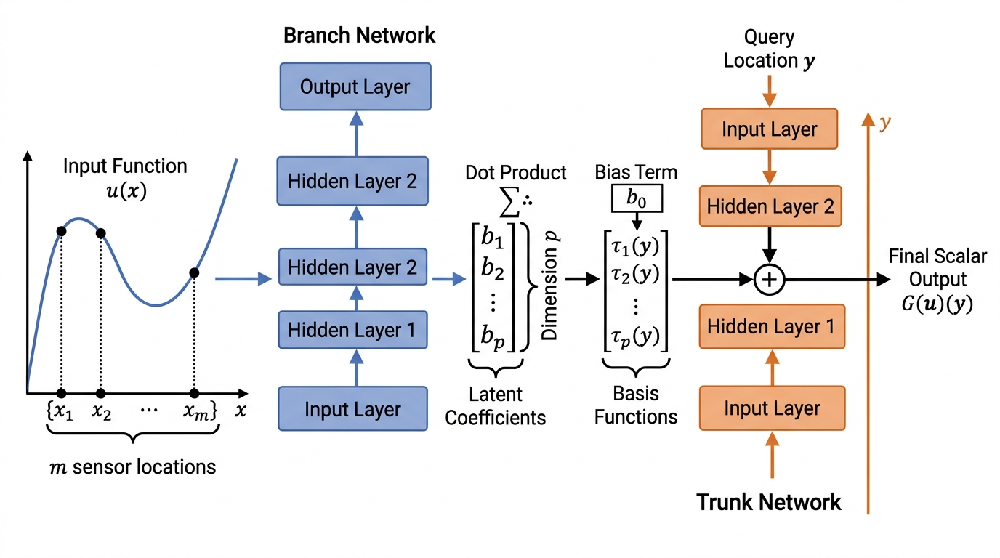

In Section 33.1, we trained a PINN to solve a single instance of the heat equation with a specific initial condition. If the initial condition changes, we must retrain from scratch. Neural operators solve this fundamental limitation by learning the mapping from input functions (initial conditions, boundary conditions, forcing terms, PDE coefficients) to output functions (solutions). Once trained, a neural operator produces the solution for any new input function in a single forward pass, with inference times typically three to four orders of magnitude faster than traditional solvers. This section covers the two dominant neural operator architectures: Deep Operator Network (DeepONet) (which factorizes the operator into branch and trunk networks) and the Fourier Neural Operator (FNO) (which performs convolutions in the spectral domain for resolution invariance).
1. From Functions to Operators
Every time a climate scientist changes an initial condition or an engineer tweaks a design parameter, a traditional PDE solver must restart from zero, burning hours of compute for each variation. Neural operators eliminate that bottleneck by learning the solver itself.
A neural operator accepts an entire function as input and returns another function as output. Instead of the familiar mapping between finite-dimensional vectors (\(f: \mathbb{R}^n \to \mathbb{R}^m\)), it learns a mapping between function spaces (collections of functions that share a common domain and structure, such as all smooth functions on an interval), \(\mathcal{G}: \mathcal{U} \to \mathcal{V}\), where \(\mathcal{U}\) and \(\mathcal{V}\) are (typically infinite-dimensional) spaces of functions. For a PDE, the operator might map an initial condition \(u_0(x) \in \mathcal{U}\) to the solution at time \(T\), \(u(x, T) \in \mathcal{V}\).
Because these function spaces can be infinite-dimensional, learning such a mapping requires architectures specifically designed for operator approximation, not just larger versions of standard neural networks. The theoretical foundation is the universal approximation theorem for operators (Chen & Chen, 1995): a neural network with a specific architecture can approximate any continuous nonlinear operator to arbitrary accuracy. DeepONet and the FNO are two different architectures that realize this theorem, each with distinct strengths.
A neural operator is a parametric map between infinite-dimensional function spaces. It trains on paired examples of input and output functions, then predicts the output for any new input in a single forward pass. Traditional PDE solvers re-solve from scratch whenever the input (initial condition, boundary, or coefficient field) changes. A neural operator amortizes that cost across all future queries. The network encodes the input function into a finite-dimensional latent representation, transforms it through learnable layers that respect the function-space structure, and decodes it back to a function. Choose a neural operator over a PINN when you need to evaluate the same PDE family for hundreds or thousands of different inputs; choose a traditional solver when you need guaranteed error bounds or have only a single instance to solve. In short: A neural operator trades one expensive training run for unlimited cheap predictions across an entire family of equations.
The critical advantage of neural operators is amortized computation. Training is expensive (hours to days on GPU), but inference is cheap (milliseconds). For applications that require solving the same PDE thousands of times with different parameters, such as uncertainty quantification (Chapter 32), design optimization (Chapter 45), or real-time control, a single trained neural operator replaces an entire fleet of traditional solver runs. The break-even point is typically around 100 to 1000 forward evaluations, after which the neural operator is faster in total wall-clock time.
2. DeepONet: Branch and Trunk
With the universal approximation guarantee established, the next question is architectural. DeepONet provides the first major answer.
DeepONet (Deep Operator Network) factorizes the operator into two sub-networks:
- The branch network encodes the input function \(u(x)\), evaluated at a fixed set of sensor locations \(\{x_1, \ldots, x_m\}\), into a latent representation \(\mathbf{b} = [b_1, \ldots, b_p] \in \mathbb{R}^p\).
- The trunk network takes the query location \(y\) (where we want to evaluate the output) and produces a basis representation \(\boldsymbol{\tau} = [\tau_1(y), \ldots, \tau_p(y)] \in \mathbb{R}^p\).
The output is their inner product: Figure 33.2.1 illustrates DeepONet branch-trunk architecture.

This factorization has elegant properties: the branch network learns a data-dependent representation of the input function, while the trunk network learns a set of basis functions for the output space. The inner product combines them, analogous to how a traditional Galerkin method (a technique that approximates a continuous solution by projecting onto a finite set of basis functions) projects onto a finite basis. Figure 33.2 illustrates this two-network architecture and the dot-product combination step.
import torch
import torch.nn as nn
class DeepONet(nn.Module):
"""DeepONet: branch encodes input function, trunk encodes query location."""
def __init__(self, branch_input_dim, trunk_input_dim, hidden_dim=128,
num_basis=64):
super().__init__()
# Branch network: input function values at sensor locations -> latent
self.branch = nn.Sequential(
nn.Linear(branch_input_dim, hidden_dim),
nn.Tanh(),
nn.Linear(hidden_dim, hidden_dim),
nn.Tanh(),
nn.Linear(hidden_dim, num_basis),
)
# Trunk network: query location -> basis functions
self.trunk = nn.Sequential(
nn.Linear(trunk_input_dim, hidden_dim),
nn.Tanh(),
nn.Linear(hidden_dim, hidden_dim),
nn.Tanh(),
nn.Linear(hidden_dim, num_basis),
)
self.bias = nn.Parameter(torch.zeros(1))
def forward(self, u_sensors, y_query):
"""
u_sensors: (batch, m) - input function at m sensor locations
y_query: (batch, d) - query locations in output domain
Returns: (batch,) - operator output at query locations
"""
b = self.branch(u_sensors) # (batch, num_basis)
tau = self.trunk(y_query) # (batch, num_basis)
return torch.sum(b * tau, dim=-1) + self.bias
# Example: map initial condition u0(x) to solution u(x, T=0.5)
# m=100 sensor locations, 1D query points
model = DeepONet(branch_input_dim=100, trunk_input_dim=1)
3. Fourier Neural Operator: Spectral Convolutions
DeepONet's branch-trunk factorization works well for point queries and irregular sensor data, but it treats the spatial domain as an unstructured collection of locations. When the data lives on a regular grid, a second architecture exploits that structure directly by working in the frequency domain.
The Fourier Neural Operator (FNO) takes a fundamentally different approach. Instead of factorizing the operator, it processes the input function through a sequence of layers, each of which applies a linear transformation in Fourier space (the frequency-domain representation obtained by decomposing a signal into its constituent sinusoidal components) followed by a nonlinear activation in physical space:
$$v^{(l+1)}(x) = \sigma\Big(W^{(l)} v^{(l)}(x) + \mathcal{F}^{-1}\big(R^{(l)} \cdot \mathcal{F}[v^{(l)}]\big)(x)\Big)$$where \(\mathcal{F}\) denotes the Fourier transform, \(R^{(l)}\) is a learnable weight matrix in Fourier space (applied to the first \(k_{\max}\) modes), \(W^{(l)}\) is a local linear transformation, and \(\sigma\) is a pointwise nonlinearity (typically Gaussian Error Linear Unit, or GELU).
Mental Model
Think of the FNO's spectral convolution like an audio equalizer on a mixing board. A sound wave (your PDE solution) is a sum of frequencies. The equalizer decomposes the signal into its frequency bands, lets you boost or cut each band independently with a slider, and then recombines them into a modified signal. The FNO does the same thing: the Fourier transform decomposes the spatial field into frequency modes, the learnable weight matrix \(R^{(l)}\) acts as the set of sliders (adjusting each mode's amplitude and phase), and the inverse transform reassembles the result. Because the equalizer operates on frequencies rather than individual audio samples, it works identically whether the song is recorded at 44.1 kHz or 96 kHz. That is exactly why the FNO generalizes across spatial resolutions.
The key properties of the spectral convolution are:
- Resolution invariance (the ability of a trained model to accept inputs discretized at any spatial resolution, not just the resolution seen during training): since convolutions in physical space become pointwise multiplications in Fourier space, and the Fourier transform is defined for any discretization, an FNO trained at one resolution can be evaluated at a different resolution without retraining. Standard convolutional networks cannot do this because their learned filters have a fixed pixel width tied to the training grid spacing.
- Global receptive field: each Fourier layer captures long-range dependencies across the entire domain, unlike local convolutional filters that require stacking many layers for global context.
- Efficient parameterization: by truncating to \(k_{\max}\) Fourier modes, the model captures the dominant spectral components of the solution while keeping the parameter count manageable.
Checkpoint
So far: the FNO replaces spatial convolutions with learnable multiplications in Fourier space, gaining three properties at once: resolution invariance (works on any grid), a global receptive field (each layer sees the whole domain), and efficient parameterization (only the dominant frequency modes carry learnable weights).
import torch
import torch.nn as nn
import torch.fft
class SpectralConv1d(nn.Module):
"""1D Fourier layer: learnable filter in spectral domain."""
def __init__(self, in_channels, out_channels, modes):
super().__init__()
self.modes = modes # number of Fourier modes to keep
scale = 1.0 / (in_channels * out_channels)
# Complex-valued weights for Fourier modes
self.weights = nn.Parameter(
scale * torch.randn(in_channels, out_channels, modes,
dtype=torch.cfloat)
)
def forward(self, x):
"""x: (batch, channels, spatial_points)."""
# Transform to Fourier space
x_ft = torch.fft.rfft(x)
# Multiply relevant modes by learnable weights
out_ft = torch.zeros_like(x_ft[:, :1, :].repeat(1, self.weights.shape[1], 1))
out_ft[:, :, :self.modes] = torch.einsum(
"bim,iom->bom", x_ft[:, :, :self.modes], self.weights
)
# Transform back to physical space
return torch.fft.irfft(out_ft, n=x.size(-1))
class FNO1d(nn.Module):
"""1D Fourier Neural Operator with 4 Fourier layers."""
def __init__(self, modes=16, width=64):
super().__init__()
self.fc0 = nn.Linear(2, width) # lift: (x, u) -> high-dim
# Four Fourier layers
self.convs = nn.ModuleList([
SpectralConv1d(width, width, modes) for _ in range(4)
])
self.ws = nn.ModuleList([
nn.Conv1d(width, width, 1) for _ in range(4)
])
# Project back to output
self.fc1 = nn.Linear(width, 128)
self.fc2 = nn.Linear(128, 1)
def forward(self, x):
"""x: (batch, spatial_points, 2) where channels are [coord, u0]."""
x = self.fc0(x) # (batch, S, width)
x = x.permute(0, 2, 1) # (batch, width, S)
for conv, w in zip(self.convs, self.ws):
x1 = conv(x) # spectral pathway
x2 = w(x) # local pathway
x = torch.nn.functional.gelu(x1 + x2)
x = x.permute(0, 2, 1) # (batch, S, width)
x = torch.nn.functional.gelu(self.fc1(x))
return self.fc2(x) # (batch, S, 1)
NVIDIA's FourCastNet (Pathak et al., 2022) applies an FNO-inspired architecture, the Adaptive Fourier Neural Operator (AFNO), to global weather prediction on the 0.25-degree ECMWF Reanalysis v5 (ERA5) grid (721 x 1440 spatial points, 20 atmospheric variables). Trained on 40 years of reanalysis data, FourCastNet generates 7-day forecasts in under 2 seconds on a single graphics processing unit (GPU), compared to hours on a supercomputer for the traditional Integrated Forecasting System (IFS). The model achieves competitive accuracy with IFS for lead times up to 5 days. As of 2024, subsequent neural weather models, notably Google DeepMind's GraphCast (Lam et al., 2023) and GenCast (Price et al., 2024), have surpassed both FourCastNet and IFS in forecast skill across most lead times and variables, establishing neural weather prediction as operationally viable. This application, discussed further in Chapter 51, demonstrates that neural operators can scale to real-world scientific problems with operational speed requirements.
4. DeepONet vs. FNO: When to Use Which
The two architectures have complementary strengths:
| Property | DeepONet | FNO |
|---|---|---|
| Input representation | Fixed sensor locations | Regular grid |
| Output evaluation | Any point (continuous) | Grid points |
| Resolution invariance | No (fixed sensors) | Yes (Fourier modes) |
| Irregular geometry | Handles well | Requires domain mapping |
| Multi-scale problems | Moderate | Strong (spectral) |
| Data efficiency | Moderate | Needs more data |
| Theoretical basis | Universal approximation | Spectral methods |
As a rule of thumb: use DeepONet when your data comes from irregular sensor networks or you need continuous output evaluation, and use FNO when your data lives on a regular grid and the problem has periodic or smooth boundary conditions. For problems that need both irregular inputs and resolution invariance, hybrid architectures (e.g., geo-FNO) bridge the gap.
5. The NeuralOperator Library
The NeuralOperator library provides production-ready implementations of FNO, TFNO (tensor-factorized FNO for 3D problems), SFNO (spherical FNO for data on spheres), and UNO (U-shaped neural operator). It includes built-in data loaders for standard benchmarks (Darcy flow, a benchmark PDE describing pressure-driven fluid flow through a porous medium, Navier-Stokes, shallow water equations), training utilities, and resolution-transfer evaluation. What takes approximately 120 lines of custom PyTorch above can be configured in 15 lines:
from neuralop.models import FNO
from neuralop.datasets import load_darcy_flow_small
from neuralop.training import Trainer
from neuralop.losses import LpLoss
# Load the Darcy flow benchmark dataset
train_loader, test_loaders, output_encoder = load_darcy_flow_small(
n_train=1000, batch_size=32,
test_resolutions=[16, 32], # test at multiple resolutions
test_batch_sizes=[32, 32],
)
# Create FNO model
model = FNO(
n_modes=(16, 16), # Fourier modes in each dimension
in_channels=1, # input: permeability field
out_channels=1, # output: pressure field
hidden_channels=32,
n_layers=4,
)
# Train with relative L2 loss
trainer = Trainer(model=model, n_epochs=50)
trainer.train(
train_loader=train_loader,
test_loaders=test_loaders,
output_encoder=output_encoder,
)
6. Training Neural Operators: Data Generation and Best Practices
Choosing an architecture and configuring a library are only half the challenge; the other half is producing the training data that neural operators require.
Neural operators are supervised: they need pairs of (input function, output function) for training. PINNs self-supervise through PDE residuals, but neural operators require pre-computed solutions from traditional solvers. This creates a chicken-and-egg situation: you need a solver to generate training data for the model that will replace it.
Common Misconception
Readers often believe that neural operators eliminate the need for traditional PDE solvers entirely. In reality, neural operators depend on traditional solvers to generate their training data: you must first solve the PDE many times (with varied inputs) using a classical method, then train the neural operator on those input/output pairs. The speed advantage comes at inference time, when the trained operator handles new inputs without re-running the solver, but the solver remains essential during the data generation phase.
The resolution is that training data generation is a one-time cost. Best practices include:
- Diverse training distribution: sample input functions from a rich distribution (e.g., Gaussian random fields, where each sample is a smooth function whose values at any finite set of points follow a multivariate Gaussian distribution, with varying correlation lengths) to ensure the operator generalizes across the expected range of inputs.
- Multi-resolution training: generate training data at coarse resolution (cheap) and validate at fine resolution, leveraging the FNO's resolution invariance.
- Physics-informed neural operators (PINO): combine the data-driven loss with a PDE residual loss, reducing the amount of training data needed. This hybrid marries the strengths of PINNs (no labeled data needed) and neural operators (fast inference for new inputs).
The latest direction in neural operators is building foundation models that generalize across PDE families, not just across initial conditions for a single PDE. Poseidon (Herde et al., 2024) pre-trains a neural operator on 15 PDE families and fine-tunes on unseen equations with as few as 32 examples. Multiple Physics Pretraining (MPP, McCabe et al., 2024) demonstrates that pre-training on diverse physics (fluids, electromagnetics, diffusion) improves transfer to new domains. More recently, DPOT (Hao et al., 2025) introduces a pre-trained transformer backbone for operator learning that scales to over 500 million parameters, achieving state-of-the-art results on 10 benchmark PDEs from the PDEBench suite with a single pre-trained model, and suggesting that scaling laws similar to those observed in language models may extend to scientific operator learning. These models are to PDE solving what GPT is to natural language: general-purpose function-space transformers that can be adapted to specific scientific domains with minimal task-specific data.
The Fourier Neural Operator was originally trained on 2D Navier-Stokes turbulence at a resolution of 64 x 64. When researchers evaluated it at 256 x 256 (a resolution never seen during training), it maintained relative \(L^2\) errors comparable to the training resolution. This "zero-shot super-resolution" property, unique to the spectral parameterization, prompted a flurry of interest from the computational physics community, which had spent decades fighting the curse of mesh refinement.
Try It: Train an FNO on Burgers' Equation in 30 Minutes
Build and evaluate a 1D Fourier Neural Operator on the viscous Burgers' equation using only PyTorch and NumPy.
- Generate training data. Write a finite-difference solver for the 1D viscous Burgers' equation (\(u_t + u u_x = \nu u_{xx}\), \(\nu = 0.01\)) on the domain \([0, 1]\) with periodic boundary conditions. Use 256 spatial points and integrate to \(t = 1.0\). Sample 1000 random initial conditions from a truncated Fourier series (a finite sum of sine and cosine terms used to approximate a periodic function) with 5 to 10 terms and random amplitudes.
- Build the FNO. Implement the
SpectralConv1dandFNO1dclasses from this section (copy the code above). Setmodes=16andwidth=64. The input is[x_coordinate, u0(x)]stacked along the channel dimension; the output isu(x, T=1.0). - Train for 50 epochs. Use the Adam optimizer with learning rate \(10^{-3}\), batch size 32, and relative \(L^2\) loss (the ratio of the \(L^2\) norm of the prediction error to the \(L^2\) norm of the true solution, measuring percentage error in an energy-like sense). Split your 1000 samples into 800 training and 200 test pairs.
- Test resolution transfer. Interpolate your test inputs to 512 spatial
points using
scipy.interpolate.interp1d. Run the trained FNO (without retraining) on the upsampled inputs and compare with the ground truth at 512 points. Verify that the relative error stays within 2x of the original-resolution error. - Benchmark speed. Time 200 forward passes through the FNO versus 200 runs of your finite-difference solver. Compute the speedup factor and estimate the break-even point (number of evaluations at which the FNO's training cost plus inference cost equals the solver's total cost).
Exercise 33.2.1
A DeepONet uses \(p = 4\) basis functions and \(m = 3\) sensor locations. The branch network receives the input function values \([u(x_1), u(x_2), u(x_3)] = [1.0, 0.5, 0.2]\) and outputs \(\mathbf{b} = [0.3, -0.1, 0.4, 0.2]\). The trunk network, evaluated at query point \(y = 0.7\), outputs \(\boldsymbol{\tau} = [1.0, 0.5, -0.5, 1.0]\). The bias is \(b_0 = 0.05\). Compute the operator output \(\mathcal{G}_\theta(u)(0.7)\) by hand. Then explain: if you wanted to evaluate the same input function at 100 different query points, which sub-network would you re-run and which would you reuse?
Hint
The output is the inner product \(\sum_{k=1}^{p} b_k \cdot \tau_k(y) + b_0\). For the second part, notice that the branch network depends only on the input function (which stays fixed), while the trunk network depends only on the query location (which changes).
Step-Through: One FNO Fourier Layer
Trace through a single spectral convolution layer with a tiny 1D input of 4 spatial points and \(k_{\max} = 2\) retained Fourier modes (1 input channel, 1 output channel).
Input signal: \(v = [1.0, 3.0, 1.0, 3.0]\)
Step 1 (Fast Fourier Transform, or FFT): Compute the real FFT: \(\hat{v} = \text{rfft}([1, 3, 1, 3]) = [8 + 0i,\; 0 - 2i,\; -4 + 0i]\) (3 frequency bins for length 4).
Step 2 (Multiply by learnable weights): With \(k_{\max} = 2\), apply learned complex weights \(R = [0.5 + 0i,\; 0 + 1i]\) to the first 2 modes only. Result: \(\hat{w} = [4 + 0i,\; 2 + 0i,\; 0 + 0i]\) (mode 2 is zeroed out).
Step 3 (Inverse FFT): \(\text{irfft}([4, 2, 0],\; n=4) = [1.5, 0.5, 1.5, 2.5]\).
Step 4 (Add local path): A 1x1 convolution with weight \(W = 0.1\) gives \(W \cdot v = [0.1, 0.3, 0.1, 0.3]\). Sum: \([1.6, 0.8, 1.6, 2.8]\).
Step 5 (Activation): Apply GELU pointwise: \(\approx [1.55, 0.68, 1.55, 2.79]\).
Notice that the spectral path captures the global pattern (the alternating high/low structure), while the local 1x1 path preserves pointwise information. The truncation to \(k_{\max} = 2\) modes acts as a low-pass filter, discarding high-frequency noise.
Real-World Application: Subsurface Flow in Carbon Sequestration
The U.S. Department of Energy's SMART (Science-informed Machine Learning to Accelerate Real-Time decisions) initiative uses FNO-based surrogates to model CO2 plume migration through heterogeneous rock formations. Each geological scenario requires solving multiphase Darcy flow for a different permeability field; a traditional reservoir simulator takes 30 to 60 minutes per run. The trained FNO produces pressure and saturation fields in under 50 milliseconds, enabling Monte Carlo risk assessment over thousands of geological realizations to guide injection site selection. (That is roughly a 50,000x speedup, turning a month of cluster time into a single afternoon on one GPU.)
Lab: Resolution Transfer with a 1D FNO
Goal: Verify that an FNO trained at one resolution generalizes to
finer grids without retraining, and measure how accuracy degrades as the resolution
gap increases.
Tools: PyTorch, NumPy, Matplotlib (no external operator library needed;
use the SpectralConv1d and FNO1d code from this section).
Setup (10 min): Generate 500 input/output pairs for the 1D advection
equation \(u_t + c\, u_x = 0\) (with \(c = 1\), periodic boundaries) at 64 spatial points.
Use a simple upwind finite-difference scheme to produce ground truth at \(t = 0.5\). Sample
initial conditions as random sums of 3 to 6 sinusoidal modes.
Train (10 min): Train the FNO with modes=8,
width=32 for 30 epochs on 400 training pairs. Record the relative \(L^2\)
error on the 100 held-out test pairs.
Evaluate (10 min): Without retraining, evaluate the same model at
resolutions 128, 256, and 512 by interpolating test inputs to the finer grids. For each
resolution, compute the relative \(L^2\) error against ground truth generated at that
resolution. Plot error vs. resolution ratio.
What to vary: Try \(k_{\max} \in \{4, 8, 16, 32\}\) and observe how the
number of retained modes affects the resolution-transfer ceiling. With too few modes,
fine-scale features are lost; with too many, the model may overfit to the training
resolution.
What to observe: The error should remain roughly constant (within 2x)
up to a resolution ratio of about 4x, then gradually increase. Compare this behavior
with a standard 1D convolutional neural network (CNN) (replace SpectralConv1d with a regular
nn.Conv1d) to see that the CNN fails entirely at unseen resolutions.
Exercises
- Conceptual: Explain why a standard CNN cannot generalize across resolutions while an FNO can. What property of the Fourier transform makes this possible? How does the choice of \(k_{\max}\) (number of retained modes) affect accuracy and generalization?
- Coding: Using the NeuralOperator library, train an FNO on the Darcy flow dataset at resolution 16 x 16 and evaluate it at 32 x 32. Report the relative \(L^2\) error at both resolutions. Then retrain at 32 x 32 and compare. How much does training resolution matter?
- Analysis: Implement a simple DeepONet for the 1D heat equation (input: initial condition sampled from \(\sin(k\pi x)\) for \(k = 1, \ldots, 5\); output: solution at \(t = 0.5\)). Compare its accuracy and inference speed against: (a) the PINN from Section 33.1 (retrained for each initial condition), and (b) a traditional finite-difference solver. At what number of evaluations does the DeepONet break even in total wall-clock time?